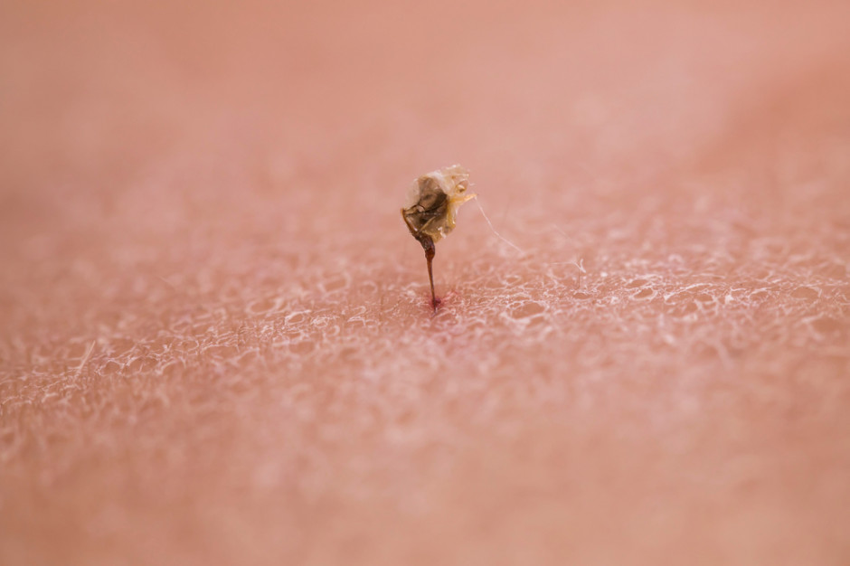
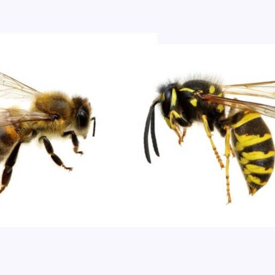
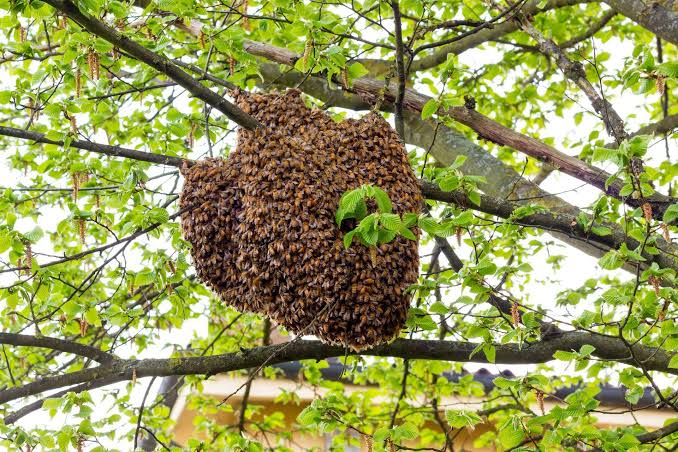

🐝 Bezpieczeństwo i Statystyki
Jak chronić pszczoły i bezpiecznie z nimi współistnieć
Jak chronić pszczoły i bezpiecznie z nimi współistnieć

Pierwsza pomoc
Pszczoła zostawia w skórze żądło z woreczkiem jadowym – zeskrob je paznokciem lub kartą, nie ściskając palcami. Przyłóż zimny okład. W razie obrzęku twarzy, duszności lub zawrotów głowy natychmiast wezwij pogotowie (112).

Rozpoznaj gatunek
Pszczoła miodna jest krępa, owłosiona i brązowo-złota; nie interesuje się słodkimi napojami ani mięsem. Osa jest gładka, jaskrawo żółto-czarna z wyraźnym przewężeniem w talii, a szerszeń jest od niej znacznie większy i ma rudawe ubarwienie.

Co robić z rojem?
Pszczoły w roju wiszącym na gałęzi są zazwyczaj najedzone miodem i spokojne, bo szukają nowego domu. Zachowaj dystans, nie polewaj ich wodą ani nie strącaj – skontaktuj się z lokalnym pszczelarzem lub kołem pszczelarskim, które bezpiecznie go zbierze.
Zabiegi środkami ochrony roślin wykonuj wyłącznie wieczorem po zakończeniu oblotu pszczół (najlepiej po zachodzie słońca), przy bezwietrznej pogodzie. Unikaj oprysków w okresie kwitnienia roślin uprawnych i chwastów w międzyrzędziach.
Wykonywanie oprysków toksycznych dla pszczół w godzinach ich aktywności jest wykroczeniem. Takie zdarzenia oraz podejrzenie wytrucia rodzin pszczelich należy niezwłocznie zgłosić do Państwowej Inspekcji Ochrony Roślin i Nasiennictwa (PIORiN) oraz urzędu gminy.